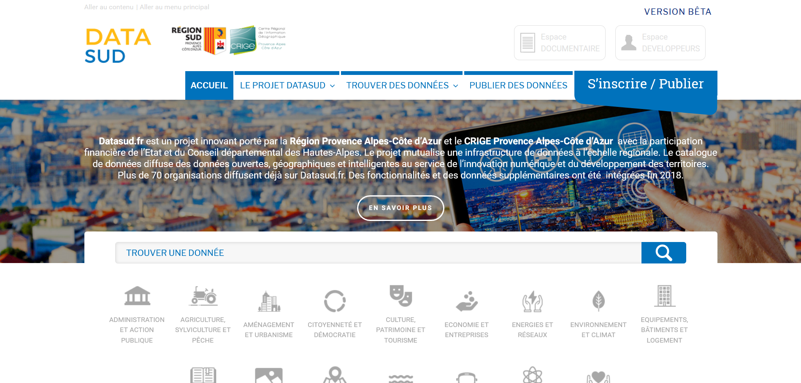

Pôle métier Mer et Littoral
Présentation de DATASUD
Proposé par le CRIGE Provence-Alpes-Côte d'Azur le 12 mars 2019 Disponible sur le git du CRIGE

DATASUD, le projet
DATASUD est un projet piloté par le CRIGE Provence-Alpes-Côte d’Azur et la Région SUD Provence Alpes-Côte d’Azur, avec la participation financière de l’État et du Conseil départemental des Hautes-Alpes.
Le projet mutualise une infrastructure de données à l’échelle régionale, rendues visibles à travers un catalogue de données.
Il répertorie les données ouvertes et géographiques au service du développement des territoires et de l’innovation numérique en région Provence-Alpes-Côte d'Azur
L'infrastructure est le fruit de la fusion entre deux guichets de génération précédente : le Géoportail du CRIGE et le portail Open PACA
Il répond à plusieurs objectifs ambitieux :
- faciliter l'accès aux données pertinentes à TOUS les réutilisateurs sans céder en qualité du catalogue
- simplifier la lisibilité des dispositifs "données" en région pour les producteurs
- moderniser les infrastructures et les services offerts par les portails précédents
L'infrastructure repose sur 3 grands principes :
- un catalogage commun pour les données géographiques et/ou données ouvertes
- la contribution directe et simplifiée des producteurs
- un renforcement du volet "social" de l'infrastructure et simplifiée des producteurs
- une offre de services à valeur ajoutée pour les partenaires du CRIGE
Partenariat CRIGE Provence-Alpes-Côte d'Azur et Région SUD
Cette ambition s'est matérialisée par la création d'un groupement de commande et le lancement d'un marché conjoint, piloté par le service SCOTIGEO de la Région SUD.
| Groupement de commande | CRIGE/Région SUD |
| Forme du marché | Accord-cadre monoattributaire |
| Financement | 50% CRIGE, 50% Région SUD |
| Durée | Fin 2016 à fin 2019 |
Prestataire sélectionné :
Sous-traitants
Le code est entièrement open-source !
Il est là : 
Feuille de route

Le marché s'achève bientôt.
DATASUD, l'organisation
Qui administre l'infrastructure ?
Le CRIGE et les services "Smart Région" et "SCOTIGEO" de la Région SUD co-administrent l'infrastructure de données.
Le CRIGE agit sur son domaine d'expertise, l'information géographique, en qualité de chef de file du réseau géomatique régional.
Que devient le Géoportail du CRIGE?
Les données géographiques pertinentes seront entièrement reprises pour être mutualisée dans DATASUD. La bascule a lieu fin 1er semestre 2019.
L'animation de la communauté d'acteurs, les guichets, les modèles, les ressources techniques,... seront les objets d'un portail connexe, le portail du CRIGE :

À qui s'adresse DATASUD ?
- Aux producteurs de données en région, pour référencer et diffuser leur patrimoine de données ;
- Aux réutilisateurs de données pour développer, aménager, protéger le territoire ;
- Aux entreprises et start-up à la recherche de données et pourvoyeurs de services innovants ;
- Aux citoyens et aux acteurs de la transparence démocratique.
Focus sur les "producteurs"
Toute organisation désireuse de référencer ou publier directement sur l'infrastructure DATASUD des données.
La contribution est gratuite et ouverte à TOUTES les organisations
Pourquoi publier ses données sur DATASUD ?
Participer à une initiative régionale, tiers-lieu de confiance, "point d'entrée de référence" pour la donnée en région
Mutualiser pour diminuer les coûts de diffusion de l'information
Publier des données dans des formats ouverts et réutilisables
Bénéficier de la publication automatique en API
Souscrire aux exigences règlementaires (Loi République Numérique, INSPIRE)
Faire remonter les données au niveau national : data.gouv.fr, geo.data.gouv.fr, geocatalogue.fr,...
Bénéficier d'un service de support technique efficace pour les réutilisateurs
Que publier sur DATASUD ?
Les données produites par votre organisation et diffusables (90% des données d'administration publique) ;
Les données ouvertes (Open Data) surtout ;
Les données en accès restreint aussi ;
Des données au format ouvert : CSV, JSON, GEOJSON, SHP, JPEG2000, GeoTIFF
Des données déjà référencées dans un catalogue de données INSPIRE ou CKAN
Qui publie ou publiera sur DATASUD ?
En contribution directe, environ 80 organisations contribuent déjà au catalogue

Demain, par moissonnage, la DREAL PACA (GEOIDE), la Métropole AMP, le SMAVD, l'ACCM,...et vous ?

DATASUD, les fonctionnalités
Trouver des données
Trouver des données sur le littoral
Utiliser des flux DATASUD
Utiliser des flux externes
Visualiser la donnée
Disposer de son propre catalogue DATASUD
Exemples :
- CRIGE : http://beta.crige-paca.org/beta/widget/crige/crige.html
- Département des Hautes-Alpes : http://beta.crige-paca.org/beta/widget/hautes_alpes/index.html
- Métropole AMP : http://beta.crige-paca.org/beta/widget/mamp/index.html
- PNR Provence-Alpes-Côte d’Azur : http://beta.crige-paca.org/beta/widget/pnrpaca/catalogue-de-donnees.html
- PNR Luberon :http://beta.crige-paca.org/beta/widget/pnrluberon/index.html
- Symielec :http://beta.crige-paca.org/beta/widget/symielecvar/index.html
- ARPE :http://beta.crige-paca.org/beta/widget/arpe/index.html
DATASUD et portail CRIGE
Comment s'articule les deux outils ?
Le portail CRIGE est le volet "animation" du réseau géomatique régionale et DATASUD est son volet "Guichet" de données. Les deux sont des outils qui reposent sur la même infrastructure de données.
DATASUD, la communauté
Faire partie de la communauté DATASUD ?
Consultez le portail du CRIGE, vous pourrez vous inscrire aux différents évènements (ateliers,barcamp, comité technique)
Faire partie de la communauté DATASUD ?
- Suivez-nous sur Twitter @crigepaca (actualité de la plateforme, annonce des nouveaux jeux de données)
- Ou sur Instagram @crigeprovencealpescotedazur (actualité de la plateforme, annonce des nouveaux jeux de données)
- L’équipe CRIGE de la plateforme DATASUD est joignable par téléphone : 04 42 90 71 22
- Elle est joignable par email : admin.datasud@crige-paca.org
- Pour toute question de support technique : support@crige-paca.org
- Sinon, une adresse générique de contact de DATASUD est disponible pour le CRIGE et la Région SUD : contact@datasud.fr